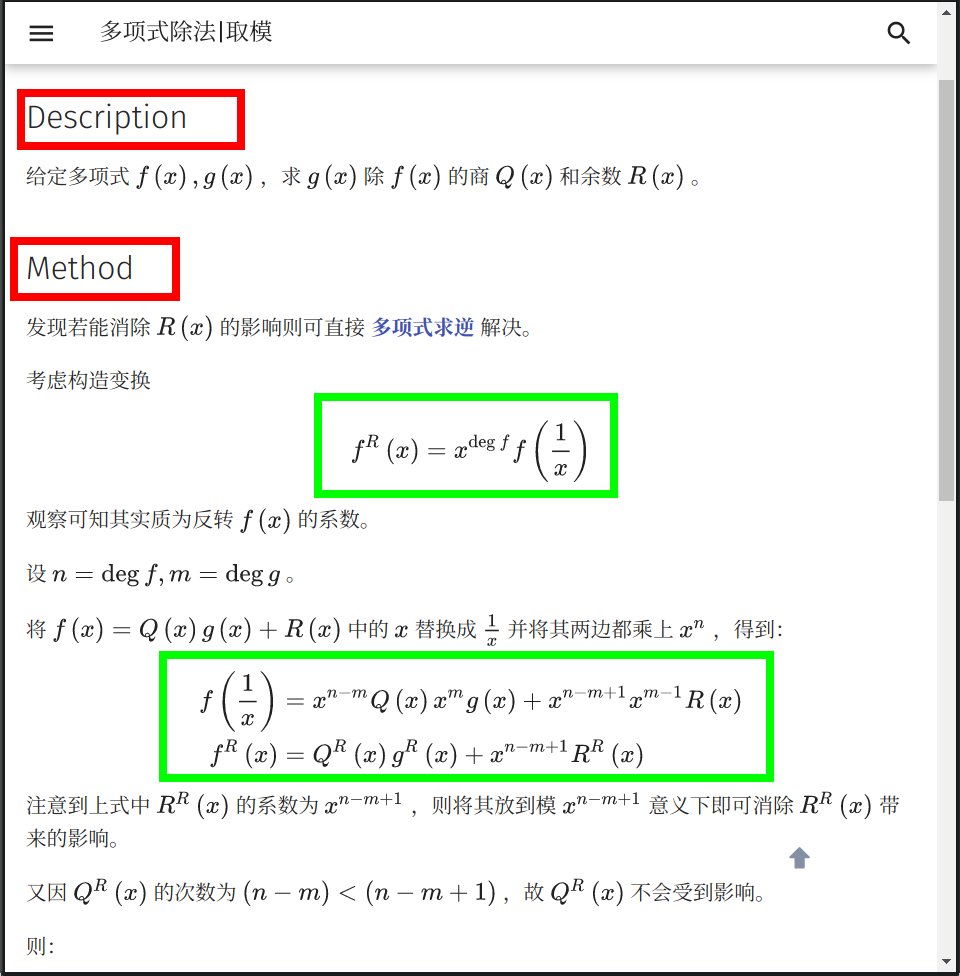

格式
在文章开始之前，OI Wiki 项目组全体成员十分欢迎您为本项目贡献页面。正因为有了上百位像您一样的人，才有了 OI Wiki 的今天！
本页面将列出在 OI Wiki 编写过程时推荐使用的格式规范与编辑方针。请您在撰稿或者修正 Wiki 页面以前，仔细阅读以下内容，以帮助您完成更高质量的内容。
如果您已迫不及待，想要快速上手，建议先阅读图片举例的章节。
贡献文档要求¶
当你打算贡献某部分的内容时，你应该尽量熟悉以下三部分：
- 文档存储的格式
- 文档的合理性
- remark-lint 和 \rm{\LaTeX} 公式的格式要求
文档引用与存储的格式¶
-
文件名请务必都小写，以
-分割。 例如：file-name.md。 -
请务必确保文档中引用的 外链 图片已经全部转存到了 本库内 对应的
images文件夹中（防止触发某些网站的防盗链），建议处理成MD 文档名称 + 编号的形式（可参考已有文档中图片的处理方式）。例如：本篇文档的文件名称为 format，则文档中引用的第一张图片的名字为format1.png。 -
推荐使用 SVG 格式的图片5，以获取较好的清晰度和缩放效果。
-
动图如果无法或者不会制作 SVG 格式的，则推荐使用 APNG 格式7的文件。Windows 用户可使用 ScreenToGif 录制，Linux 用户可使用 Peek 录制，注意需要在设置里调整为录制 APNG。其他情况则推荐先制作为 MP4 等视频文件再转换为 APNG，如果使用 ffmpeg 则可以使用
ffmpeg -i filename.mp4 -f apng filename.apng -plays 0转换。8 -
同时具有源文件和导出图像的图片（例如 JPG 文件与 PSD 文件或者 SVG 图像与 TikZ TeX 源代码），建议将源文件以与图片相同的文件名保存于同一目录下。
-
请确保您的文档中的引用链接的稳定性。不推荐 引用 自建 服务中的资源（如自建 OJ 里的题目）。建议在添加时同时将该外链存于互联网档案馆6，以防无法替代的链接失效。
-
站内链接请去掉网站域名，并且使用相对路径链接对应
.md文件。例如，在本页面（intro/format）中链接杂项简介（misc），应使用[杂项简介](../misc/index.md)。
文档的合理性¶
合理性，指所编写的 内容 必须具有如下的特性：
- 由浅入深，内容的难度应该具有渐进性。
-
逻辑性。
-
对于算法或数学概念类内容的撰写应该尽量包含以下的内容：
- 原理：说明该内容对应的原理；
- 例子：给出 1 ~ 2 个典型的例子；
- 题目：在该标题下，只需要给出题目名字和题目链接。对于算法类题目，题目链接 OJ 的优先级为：原 OJ（国外 OJ 要求国内可流畅访问）> UOJ > LOJ > 洛谷。
示例页面：IDA*
-
对于工具类内容的撰写应该尽量包含以下的内容：
- 简介：阐明该工具的背景与用途。
- 配置方式：详细给出下载、安装、配置环境与使用的过程。
示例页面：WSL (Windows 10)
-
除现有内容质量较低的情况外，建议尽量从 补充 的角度来做贡献，而非采取直接覆盖的方式。如果拿不准主意，可以参考 关于本项目的交流方式 一节，与 OI Wiki 项目组联系。
文档的基本格式要求¶
Remark-lint 的格式要求¶
remark-lint 可以自动给项目内文件统一风格。OI Wiki 现在启用的配置文件托管在 .remarkrc。
在配置过程中 OI Wiki 项目组也遇到了一些 remark-lint 不能很好处理的问题，所以请严格按照下列要求编辑文档：
-
不要使用如
<h1>或者# 标题的一级标题。 -
标题要空一个英文半角空格，例如：
## 简介。 -
由于 remark-lint 不能很好地处理删除线，因此请不要使用删除线语法（不使用删除线语法的另外一个原因是，删除线划去的内容大多为「抖机灵」性质，对读者理解帮助不大，不符合下面的「文本内容的格式要求」中对内容表述的要求）。
-
列表：
- 列表前要有空行，新开一段。
- 使用有序列表（如
1. 例子）时，点号后要有空格。
-
行间公式前后各要有一行空行，否则会被当做是行内公式。
-
涉及到目录的更改的时候：
-
使用
???或!!!开头的 Details 语法时，每一行要包括在 Details 语法的文本框的文本，开头必须至少有 4 个空格。即使是空行，也必须保持与其他行一致的缩进。请不要使用编辑器的自动裁剪行末空格功能。
示例
1 2 3 4 5 6
???+ warning 请记得在文本前面添加 4 个空格。其他的语法还是与 Markdown 语法一致。 不添加 4 个空格的话，文本就不会出现在 Details 文本框里了。 这个`???`是什么的问题会在下文解答。Warning
请记得在文本前面添加 4 个空格。其他的语法还是与 Markdown 语法一致。
不添加 4 个空格的话，文本就不会出现在 Details 文本框里了。
这个
???是什么的问题会在下文解答。 -
代码样式的纯文本块请使用
```text。直接使用```而不指定纯文本块里的语言，可能会导致内容被错误地缩进。
标点符号的使用¶
- 请在每句话的末尾添加 句号。
- 请正确使用 全角 标点符号与 半角 标点符号。汉语请使用全角符号，英语请使用半角符号。
- 注意区分 顿号 与 逗号 的使用。
- 注意 括号 的位置。句内括号与句外括号的位置不同。
- 通常使用 分号 来表示列表环境中各复句之间的关系。
- 请特别注意，我们通常习惯使用
「与」来提高 中文引号 的辨识度。 -
对于有序列表，推荐在每一项的后面添加 分号，在列表最后一项的后面添加 句号；对于无序列表，推荐在每一项的后面添加 句号。
示例
- 中学生学科竞赛主要包括信息学奥林匹克竞赛、信息学奥林匹克竞赛、信息学奥林匹克竞赛、信息学奥林匹克竞赛和信息学奥林匹克竞赛（谁写的这个示例，建议抬走）。
- “你吃了吗？”，李四问张三。
- 我想对你说：“我真是太喜欢你了。”
- 「苟利国家生死以，岂因祸福避趋之！」
- 张华考上了大学；李萍进了技校；我当了工人：我们都有美好的前途。1
- 以下是这个算法的基本流程：
- 初始化到各点的距离为无穷大，将所有点设置为未被访问过，初始化一个队列；
- 将起点放入队列，将起点设置为已被访问过，更新到起点的距离为 0；
- 取出队首元素，将该元素设置为未被访问过；
- 遍历所有与此元素相连的边，若到这个点存在更短的距离，则进行松弛操作；
- 若这个点未被访问过，则将这个点放入队列，且设置这个点为已经访问过；
- 回到第三步，直到队列为空。
Markdown 格式与主题扩展格式要求¶
-
表示强调时请使用
**SOMETHING**和「」，而非某级标题，因为使用标题会导致文章结构层次混乱和（或）目录出现问题。 -
请正确使用 Markdown 的区块功能。插入行内代码请使用一对反引号包围代码区块；行间代码请使用一对
```包围代码区块，其中反引号就是键盘左上角波浪线下面那个符号，行间代码请在第一个```的后面加上语言名称（如：```cpp）。示例
1 2 3 4
```cpp // #include<stdio.h> //不好的写法 #include <cstdio> //好的写法 ```1 2
// #include<stdio.h> //不好的写法 #include <cstdio> //好的写法 -
「参考资料与注释」使用 Markdown 的脚注功能进行编写。格式为：
1 2
文本内容。[^脚注名] [^脚注名]: 参考资料内容。注意：冒号是英文冒号，冒号后面跟着一个空格。脚注名既可以使用数字也可以使用文本。脚注名摆放的位置与括号的用法一致。为美观起见，建议同一个页面内的脚注名遵循统一的命名规律，如：ref1、ref2、note1……
脚注的内容统一放在
## 参考资料与注释二级标题下。示例
1 2 3 4 5 6 7 8 9
当 `#include <cxxxx>` 可以替代 `#include <xxxx.h>` 时，应使用前者。[^ref1] 2020年1月21日，CCF宣布恢复NOIP。[^ref2] ## 参考资料与注释 [^ref1]: [cstdio stdio.h namespace](https://stackoverflow.com/questions/10460250/cstdio-stdio-h-namespace) [^ref2]: [CCF关于恢复NOIP竞赛的公告-中国计算机学会](https://www.ccf.org.cn/c/2020-01-21/694716.shtml)当
#include <cxxxx>可以替代#include <xxxx.h>时，应使用前者。22020 年 1 月 21 日，CCF 宣布恢复 NOIP。3
-
建议使用主题扩展的
???+note格式（即 Collapsible Blocks）来描述题面和参考代码。也可以用这种格式来展示其他需要补充介绍的内容。示例代码：
1 2 3 4 5 6 7 8 9 10 11
??? note "标题" 这个文本框会被默认折叠。 推荐将 **解题代码** 放在折叠文本框内。 ???+note "[HDOJ 的“A + B Problem”](https://vjudge.net/problem/HDU-1000)" 标题也可以使用 Markdown 的超链接。这里的超链接是 HDOJ 的“A + B Problem”。 而且推荐以这种方式**标注原题链接**。 注意双引号的位置。效果：
标题
这个文本框会被默认折叠。
推荐将 解题代码 放在折叠文本框内。
HDOJ 的“A + B Problem”
标题也可以使用 Markdown 的超链接。这里的超链接是 HDOJ 的“A + B Problem”。
而且推荐以这种方式 标注原题链接。
注意双引号的位置。
两种格式的区别是，带
+的会默认保持展开，而不带+的会默认保持折叠。折叠框的标题，即
???+note中note后的内容应以"包裹起来。其中的内容支持 Markdown 语法。详见 Admonition - Changing the title。（不具备折叠功能的为一般的 Admonitions，参考 Admonitions - Material for MkDocs）如果需要嵌套折叠框，推荐使用 MDUI 的阴影样式，提高内层折叠框的海拔。
OI Wiki 支持
.mdui-shadow-[0-24]，一般情况下最多用到两层折叠框，外层用note即可（其实就是mdui-shadow-2），内层推荐使用mdui-shadow-6。示例：
1 2 3 4 5 6 7
???+note "题目" 内容 ??? mdui-shadow-6 "参考代码" ```cpp 代码 ```题目
内容
参考代码
1代码
如果对 mkdocs-material（我们使用的这个主题）还有什么问题，还可以查阅 MkDocs 使用说明 和 cyent 的笔记。前者介绍了 mkdocs-material 主题的插件使用方式，而后者介绍了 Markdown 传统语法和 mkdocs-material 支持的扩展语法。
文本内容的格式要求¶
-
所有的 OI Wiki 文本都应使用粗体标记。
-
在页面的开头应有一段简短的文字（如「本页面将介绍……」），用于概述页面内容。
示例
本页面将列出在 OI Wiki 编写过程时推荐使用的格式规范与编辑方针。
-
涉及到“前置知识”的页面，请在开头添加一行 前置知识：……，放在页面概述前。格式如下：
前置知识：[站内页面1](url1)、[站内页面2](url2)和[站内页面3](url3)
???+ success "示例" 前置知识：时间复杂度
1 | |
-
请注意文档结构。文档结构应当十分条理，层次清晰。请不要让诸如「五级标题」这种事情再次发生了，一篇正常的文章是用不到如此复杂的结构层次的。
-
请注意内容的表述。作为一个百科网站，OI Wiki 使用的语言应该是书面的，客观的。诸如「抖机灵」性质的，对读者理解帮助不大的内容，不应该出现在 OI Wiki 当中。
-
请尽量为链接提供完整的标题、或者可被识别的提示，避免使用裸地址和“这”、“此”之类的模糊不清的描述。每一个超链接都应尽量对其加以清楚明确的描述，方便读者明白该超链接将指向何处。
建议使用源文章或者标签页的标题。
???+ fail "不推荐的写法"
1 2 3 | |
1 2 3 | |
???+ success "推荐的写法"
1 | |
1 | |
-
受 Markdown 格式限制，
## 参考资料与注释二级标题必须放在文末。 -
所有用作序号的数字建议使用中文。示例：
- 数列的第一项。
- 输入文件的第一行。
-
请尽量避免在标题中使用 MathJax 公式，无论是几级标题。在标题中使用公式有可能会导致目录显示错误。4
-
请注意代码的可读性。
- 代码应拥有清晰的逻辑。
- 建议在参考代码中添加适当注释以方便读者理解。
- 尽量避免出现影响阅读的预编译指令和宏定义。
LaTeX 公式的格式要求¶
LaTeX 作为公式排版的首选，我们应当正确地使用它。因此对于 LaTeX 的使用我们有严格的要求。如果您想要快速上手，可以阅读本章节末给出的表格。
-
使用 Roman 体表示常量和函数。使用 Italic 体表示变量。LaTeX 已经预先定义好了一些常见的常量、函数、运算符等，我们可以直接调用，包括但不限于：
1\log, \ln, \lg, \sin, \cos, \tan, \sec, \csc, \cot, \gcd, \min, \max, \exp, \inf, \mod, \bmod, \pmod所以在输入常量、函数名、运算符等时，请先检查一下是否应该使用 Roman 体或其它字体。LaTeX 符号的书写可参考 KaTeX 的 Supported Functions 页面（不是全部），也可以搜索求解。
如果遇到没有预先定义好的需要使用 Roman 体的 函数名，我们可以使用
$\operatorname{something}$来产生，如我们可以使用$\operatorname{lcm}$产生正体的最小公倍数（函数）符号。同理，产生 Roman 体的 常量 应用$\mathrm{}$；产生 Roman 体粗体符号应用$\mathbf{}$；产生 Italic 体粗体符号应用$\boldsymbol{}$（如向量 \boldsymbol{a}）。对于多字母的变量，应当使用$\textit{}$。其他非数学内容，包括英文、特殊符号等，一律使用$\text{}$。中文我们则建议不放在 LaTeX 公式中。 -
在行内使用分数的时候，请使用
$\dfrac{}{}$。比如$\dfrac{1}{2}$，效果 \dfrac{1}{2}，而不是$\frac{1}{2}$，效果 \frac{1}{2}。 -
组合数请使用
\dbinom{n}{m}，效果 \dbinom{n}{m}，而不是{n \choose m}（在 LaTeX 中这种写法已不推荐）；与上一条关于分数的约定相似，请不要使用\binom{n}{m}，效果 \binom{n}{m}。 -
尽可能避免在行内使用巨运算符（如 \sum，\prod，\int 等）。
-
在不会引起歧义的情况下，请用
$\times$代替星号，叉乘请使用$\times$，点乘请使用$\cdot$。如 a\times b，a\cdot b，而不是 a\ast b。 -
请用
$\cdots$（居于排版基线与顶线中间），$\ldots$（居于排版基线的位置），$\vdots$（竖着的省略号）代替$...$。如 a_1,a_2,\cdots a_n，而不是 a_1,a_2,... a_n。 -
请注意，不要在非代码区域使用任何程序设计语言的表示方式，而是使用 LaTeX 公式。例如，使用
$=$而不是$==$（如 a=b，而不是 a==b）、使用`a<<1`或者$a\times 2$而不是$a<<1$、使用$a\bmod b$代替$a\%b$（如 a\bmod b，而不是 a\%b）等。 -
公式中不要使用中括号连缀（即 C++ 高维数组的表示方式）而多使用下标。即 a_{i,j,k} 而不是 a[i][j][k]。在公式中下标较复杂的情况下建议改用多元函数（f(i,j,k)）或内联代码格式。对于一元简单函数使用
$f_i$、$f(i)$或$f[i]$均可。 -
为了统一且书写方便，复杂度分析时大 O 记号请直接使用
$O()$而不是$\mathcal O()$。 -
在表示等价关系时，请使用
$\iff$，效果 \iff，而不是$\Leftrightarrow$，效果 \Leftrightarrow。 -
分段函数环境
cases只能有两列（即一个&分隔符）。 -
请不要滥用 LaTeX 公式。这不仅会造成页面加载缓慢（因为 MathJax 的效率低是出了名的），同时也会导致页面的排版混乱。我们通常使用 LaTeX 公式字体表示变量名称。我们的建议是，如非必要，尽量减少公式与普通正文字体的 大量 混合使用，如非必要，尽量不要使用公式，如：
1我们将要学习 $Network-flow$ 中的 $SPFA$ 最小费用流，需要使用 $Edmonds-Karp$ 算法进行增广。就是一个典型的 滥用公式字体 的例子。（在页面中使用斜体请用
*文本*表示。） -
请正确使用对应的 LaTeX 符号，尤其是公式中的希腊字母等特殊符号。如欧拉函数请使用
$\varphi$，圆的直径请使用$\Phi$，黄金分割请使用$\phi$。这些符号虽然同样表示希腊字母 Phi，但是在不同的环境下有不同的含义。切记 不要使用输入法的插入特殊符号 来插入这种符号。另外，由于 LaTeX 历史原因，空集的符号应为
$\varnothing$而不是$\emptyset$；由于近百年来数学符号演变，定义集合符号应使用 人民教育出版社普通高中数学教材 A 版 书写的版本，即 实数集$\mathbf{R}$，正整数集$\mathbf{N}^*$等。同理，其他的符号应按照中国国内最常使用的版本来书写，重点参照数学和信息技术课本。
我们可以使用一个表格来总结一下上述内容。注意本表格没有举出所有符号的用法，只给出常见的错误。类似的情况类比即可。
| 不符合规定的用法 | 渲染效果 | 符合规定的用法 | 渲染效果 |
|---|---|---|---|
$log, ln, lg$ |
log, ln, lg | $\log$, $\ln$, $\lg$ |
\log，\ln，\lg |
$sin, cos, tan$ |
sin, cos, tan | $\sin$, $\cos$, $\tan$ |
\sin，\cos，\tan |
$gcd, lcm$ |
gcd, lcm | $\gcd$, $\operatorname{lcm}$ |
\gcd，\operatorname{lcm} |
$ 小于 a 的质数 $ |
小于 a 的质数 | 小于 $a$ 的质数 |
小于 a 的质数 |
$...$ |
... | $\cdots$, $\ldots$, $\vdots$, $\ddots$ |
\cdots，\ldots，\vdots，\ddots |
$a*b$（两个数相乘） |
a*b | $a\times b$, $a\cdot b$ |
a\times b，a\cdot b |
$SPFA$（英文名称） |
SPFA | SPFA |
SPFA |
$a==b$ |
a==b | $a=b$ |
a=b |
$f[i][j][k]$ |
f[i][j][k] | $f_{i,j,k}$, $f(i,j,k)$ |
f_{i,j,k}，f(i,j,k) |
$R,N^*$（集合） |
R,N^* | $\mathbf{R}$, $\mathbf{N}^*$ |
\mathbf{R}，\mathbf{N}^* |
$\emptyset$ |
\emptyset | $\varnothing$ |
\varnothing |
$different$ |
different | $\textit{different}$ |
\textit{different} |
对数学公式的附加格式要求¶
请注意，尽管上述输入公式的语法和真正的 LaTeX 排版系统非常相似，但 MathJax 和 LaTeX 是两个完全没有关系的东西，MathJax 仅仅使用了一部分与 LaTeX 非常相似的语法而已。实际上，二者之间有不少细节差别，而这些差别经常导致写出来的公式在二者之间不通用。
由于 OI Wiki 使用 LaTeX 排版引擎开发了 PDF 导出工具，因此有必要强调公式在 MathJax 和 LaTeX 之间的兼容性。请各位在 Wiki 中书写数学公式时注意以下几点。
这些规则已经向 MathJax 做了尽可能多的妥协。导出工具兼容了一部分原本仅能在 MathJax 中正常输出的写法。
-
请使用
\begin{aligned} ... \end{aligned}表示多行对齐的公式； -
如果这些多行对齐的公式需要 编号，请用
align或equation环境； -
不要使用
split、eqnarray环境； -
不要使用
\lt,\gt来表示大于号和小于号，请直接使用<，>； -
不要直接用
\\换行（需要换行的公式，请套在aligned或其他多行环境下）； -
若要输出 LaTeX 符号 \rm{\LaTeX}，请用
$\rm{\LaTeX}$，而不是mathrm；（\LaTeX在 TeX 排版系统中是一个不能用于数学模式下的命令，而\mathrm又不能在普通模式下使用；另外，\text命令虽然在 TeX 上正常输出，但是在 MathJax 中\text命令的参数会被原样输出，而不是按命令转义）； -
数学公式中的中文文字 必须置于
\text{}命令之中，而变量、数字、运算符、函数名称则必须置于\text{}命令之外。请不要在\text{}命令中嵌套数学公式； -
使用
array环境时请注意 实际列数与对齐符号的数量保持一致。例如下面的公式中，数据实际有 3 列（&是列分隔符），因此需要 3 个对齐符号（l/r/c分别表示左、右、居中对齐）。1 2 3 4 5 6
$$ \begin{array}{lll} F_1=\{\frac{0}{1},&&\frac{1}{1}\}\\ F_2=\{\frac{0}{1},&\frac{1}{2},&\frac{1}{1}\}\\ \end{array} $$
伪代码格式¶
伪码具体格式没有严格要求，请参考算法导论或学术论文。注意不要写成 Python。
Wiki 内使用 LaTeX 书写伪码，整体处于 array 环境中，缩进使用 $\qquad$，文字描述使用 $\text$，关键字使用 $\textbf$，赋值使用 $\gets$。
参考示例：
1 2 3 4 5 6 7 8 9 10 11 12 13 14 15 | |
代码块的格式要求¶
代码块目前分为两种：片段和例题。
关于片段代码：
- 片段的代码内容请直接在 Markdown 文档中修改。
关于例题代码：
-
例题代码的表示形式为
--8<-- "path"，代码均存储在path中。路径通常为docs/主题/code/内容/内容_编号.cpp。 -
修改例题代码时，请保证你的代码是正确的。例题代码均拥有一组测试数据，存储在
/docs/主题/examples/内容/内容_编号.in/ans中。
如果你需要添加例题：
-
请在
docs/主题/code/内容中添加你的例题代码，并编号。通常，该内容文件夹中已经有了一个或者多个代码。例子：如果需要修改dag.md的代码，那么路径为docs/dp/code/dag，其中dp为主题，而dag为内容。 -
如果需要在所有例题的最后添加一个例题代码，请顺延目前的编号。比如已经存在了
code/prefix-sum/prefix-sum_3.cpp，如果需要在最后一个例题后继续添加一个例题，请将你的代码命名为prefix-sum_4.cpp并添加到docs/basic/code/prefix-sum中。 -
如果需要在文章中间添加一个例题代码，请插入并改变原先的编号。比如已经存在了
prefix-sum_2.cpp和prefix-sum_3.cpp，如果你需要在第二个例题和第三个例题中间再添加一个例题，请将你的代码命名为prefix-sum_3.cpp并将原先的prefix-sum_3.cpp改名为prefix-sum_4.cpp同时 在 Markdown 文档和测试数据存放的文件夹中同步修改编号。 -
别忘记，你还要对你的代码添加一组测试数据，以保证这个代码是可以成功运行的。 你需要在
docs/主题/examples/内容文件夹中添加一组测试数据，将输入数据存储为内容_编号.in，将标准答案存储为内容_编号.ans。 -
最后，可以将代码添加到文档中了。请直接在文档中用添加代码块的格式，并将代码块内部直接写成
--8<-- "你的代码路径"的格式就可以了。
图解¶
可能上述要求把握起来有些困难，接下来我们给出一些图片来具体分析哪种格式应该使用，哪种不该使用：
例 1¶

将复杂的 LaTeX 公式使用行间格式，可以使得页面错落有致。但 OI Wiki 作为一个以中文为主体的站点，我们希望大部分纲领性的信息（如标题）尽量使用中文（除英文专有名词）。
例 2¶

较复杂度的 LaTeX 公式请注意等号的对齐，同时可以适当引用 Wiki 的页面 链接 来完善内容。
例 3¶

一般情况下，我们建议将引用的资料列在文末的 ##参考资料与注释 一节，并在原句后面加上脚注，而不是直接给出链接。同时一定要避免使用 LaTeX 公式表达代码，上图中两个中括号就是不规范的写法。我们建议使用 dp(i,j) 或者 dp_{i,j}。
例 4¶

注意我们描述 乘法 的时侯一般使用 \times 或者 \cdot，特殊情况（如卷积）下会使用 *（也可以写成 \ast）。标题是简洁的词组，但我们不希望正文部分由词组拼凑而成。上图中“两个要素”，建议更改为“动态规划的原理具有以下两个要素”，上下文保持连贯。可取的地方是，适当使用 有序 列表可以更有条理地表述内容。再次提醒，在使用列表的时侯，每一项如果是一句话，需要在末位添加 标点符号。有序列表通常添加分号，在最后一项末位添加句号；无序列表统一添加句号。
例 5¶

适当引用 图片 可以增强文章易读性。使用 伪代码 的方式表达算法过程可以方便又简洁地描述算法过程，相比于直接贴模板代码更加好懂。
例 6¶

同样的问题，标题使用英文。并且在使用完括号后没有句号。另外，上图中的行间公式虽然没有使用艾弗森括号，但是由于下标嵌套过多，使得最底层的下标字体很小，整个公式也并不美观。建议将 son_{now,i} 更换为 son(now,i)，或者把 f_{now} 替换为 f(now)。我们希望尽量控制下标嵌套在两层以内（上标的运用主要是数学表达式，因此可以允许多次嵌套，如 2^{2^{2^{2^{\cdots}}}}，《上帝造题的七分钟》）。
例 7¶

使用 MkDocs 扩展语法，让例题题面与算法描述区分开。将代码折叠，可以让文章更紧凑。（毕竟看 Wiki 的大多数是了解思路，除了模板代码需要阅读外，习题的代码大多可以折叠。）在描述函数操作时，使用行内代码和 LaTeX 公式都是不错的选择。
例 8¶

在文末罗列出参考文献，可以使页面的内容更严谨，真实可信。
外部链接¶
- 标点符号用法（GB/T 15834—2011）
- 维基百科：格式手册/标点符号
- 中文文案排版指北（简体中文版）
- 中文文案风格指南 - PDFE GUIDELINE
- 一份（不太）简短的 LATEX2ε 介绍或 106 分钟了解 LATEX2ε